吴正宪
2008年6月18日是个难忘的日子，“吴正宪小学数学教师工作站”经历了一年的筹备，终于正式挂牌启动。北京市教委副主任罗洁先生前来祝贺，他的一段即兴讲话深深地触动了我和队员们，引起了我们的关注与思考。
“目前儿童教育面临的最大问题是童年生态被破坏，主要表现在儿童的身心发展和生活空间被挤压，孩子感受不到童年学习的快乐。”罗主任声情并茂地讲述了女儿与他的对话：“爸爸，小的时候您总是让我吃些有营养但我并不喜欢吃的东西。真不明白为什么好吃的东西都没有营养，而有营养的东西都不好吃呢！”
女儿的话触动了罗主任，也触动了我们这个团队。
由此我想到了我们的数学课。为什么那么多“有营养”的数学，学生却不喜欢、不爱学？我们能否让“好吃的数学”与“有营养的数学”在课堂中得到和谐统一，让孩子们在“好吃”中享受“有营养”的数学？
我们常常以成人的眼光审视系统严谨的数学，并以自己多年来早已习惯的学习方式将数学“成人化”地呈现在孩子们面前。课堂上对孩子的“奇思妙想”、“异想天开”并没有太多的在意，忽视了儿童期的心理特点和学习规律，失去了儿童的情趣。正如罗洁主任所说：“我们现在的教学在拼命压缩孩子的儿童期，把它尽早地成人化。当一个孩子该享受儿童期特有的快乐生活时，在课堂生活中却享受不到。殊不知，孩子在失去儿童期应享受的幸福的时候，在成人期是永远也弥补不回来的。”是啊，我们教师要认真思考：如何才能让孩子快乐地度过人生中只有一次的幸福童年，且收获多多？
什么是“有营养”的数学？“有营养”的数学就是在学生学习数学知识的过程中获得终身可持续发展所需要的基本知识、基本技能、数学思想方法、科学的探究态度以及解决实际问题的创新能力。总体来说：“有营养”的数学一定是有后劲的，是可持续的！
要献给孩子们“有营养”的数学，我们就必须坚守多年来数学教学的规律，坚守儿童数学学习的规律；必须读懂数学，读懂教材，抓住数学的本质进行教学，为基础知识定好位、打好桩。要善于引导学生在观察、实验、猜测、验证、推理与交流的数学活动中，有机会真正经历“数学化”，获得数学思想和方法。要以数学知识为载体，培养学生思维的深刻性、灵活性、批判性和全面性，使学生会思考、长智慧。
什么是“好吃”的数学？“好吃”的数学就是把“有营养”的数学烹调成适合孩子们口味的数学，就是孩子们喜欢的数学、爱学的数学、乐学的数学、能学的数学，就是能给孩子们良好数学感受的数学。总体来说，就是孩子们喜欢的数学、孩子们需要的数学！
要献给孩子们“好吃”的数学，就必须改变我们已经习惯了的教学行为，在教育理念和教学方式上有所突破。为孩子们奉献出“好吃”的数学，最重要的是真正读懂学生，读懂属于孩子自己的课堂。了解孩子的学习需求，是改善教学行为、设计课堂教学的重要出发点。好玩儿的数学、有魅力的数学一定是伴随着孩子们千奇百怪的问题开始的，让孩子们在发现问题、提出问题的过程中亲自尝试解决问题。教师要满腔热情地保护好奇心这颗“火种”，小心翼翼地呵护孩子的求知欲。教师要关注孩子的情感体验、行为体验，尊重每个孩子的个性品质，鼓励孩子用自己的方法诠释数学意义。
“好吃”的数学可能不那么系统严谨，但是，只有属于孩子们自己的数学才是最美的数学。
“好吃”的课堂可能不那么尽善尽美，但是，只有属于孩子们自己的课堂才是最有魅力的课堂。
怎样创造既能使孩子们儿时学习幸福，今后又能长远发展的数学教育呢？我想，只有在真正读懂学生、读懂数学、读懂教材、读懂课堂的基础上，才有可能为孩子们的童年奉献出“好吃”又“有营养”的兼得数学。
面对孩子们的需要，我们要一起行动。
课堂智慧
“搭配”课堂教学实录
师：同学们，每天起床第一件事做什么？（老师用动作提示）
生：穿衣服。
师：在上学之前，你还要作哪些准备？
生：洗漱，吃早饭，背上书包去上学。
师：今天，我们就一起来研究这些事中的数学问题。
师：张小兰同学遇到了一些问题，我们来看一看。
（教师在黑板上随意摆出三张卡片：一条裙子，两件不同的上衣）
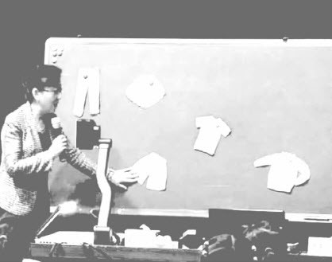
师：一条是裙子，另外两件都是上衣，怎样区分？
生：可以把长袖的叫长衣，短袖的叫短衣。
师：（在黑板上随意摆出裤子与短裤的图片）这两件呢？
生：可以叫长裤和短裤。
师：为了我们交流方便，大家给这些服装起了不同的名字。
师：张小兰起床后，看到衣柜里有这些衣服。一件上装和一件下装穿在一起算一种穿法，这些衣服有多少种不同的穿法？
（学生有的在思考，有的动手画，有的在小声交流）
师：你认为有几种不同的穿法？
（学生汇报出4种、5种、6种、7种、8种等不同的答案）
师：不着急，下面请同学们先独立思考，再把不同的穿法用自己喜欢的方式记录下来，看看有几种不同的穿法。
（学生们在独立思考后选用不同的方法记录，教师在巡视过程中找出不同的记录方式，请他们到展台前准备汇报）
师：我们一起讨论大家是如何进行搭配的，看屏幕。
情况1
生：我想把每种情况都写出来，但是还没写完。
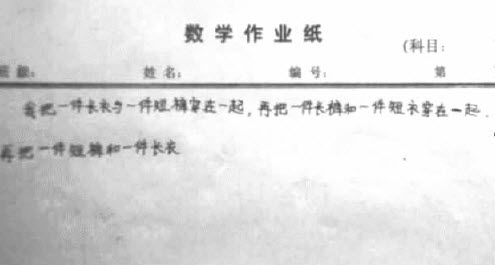
情况2
生：我是用写的方法，写出了3种。师：很多同学都是这样写的（出示多个学生总结的搭配方法）。有的写出2种，有的写出3种或4种。
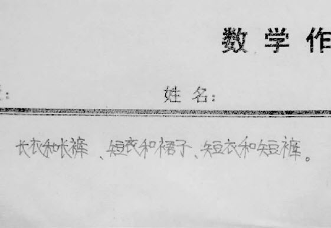
情况3
师：这是谁写的？你给我们读一读好不好？
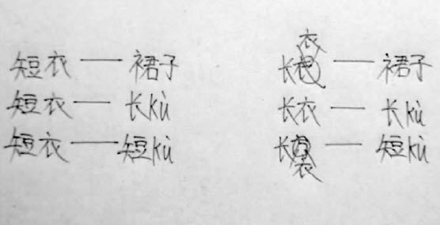
生：短衣配裙子，短衣配长裤，短衣配短裤……
师：喘一口气好不好？休息一下。“哎！”接着读——
生：（齐）长衣配裙子，长衣配长裤，长衣配短裤。
师：再喘一口气。“哎！”这是几种？
生：6种。
师：刚才同学们展示出了不同的搭配方法，到底能搭配几种？
生：6种。
师：对于前面几个同学的搭配方法，你有什么想法？
生：前面几个同学在搭配的过程中，一会儿用长衣，一会儿用长裤，搭着搭着就糊涂了。
师：“糊涂了”是什么意思？
生：“糊涂了”就是弄乱了。
师：他们是怎么弄乱的？
生：他们一会儿用长衣和长裤，一会儿又用短衣和短裤，一点儿规律也没有，所以就弄乱了。
（教师板书：乱）
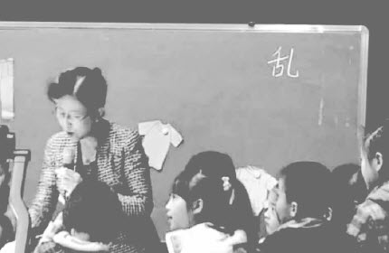
师：我们再来做一个比较，看看用第三种方法表示的同学乱不乱。
生：不乱。
生：他找齐了。
生：他没有遗漏。
师：也就是说，他找着找着就找“齐”了。（板书：齐）
师：除了这6种之外还有没有其他搭配方法？
（开始回答7种和8种的学生已经有所发现，不再举手）
师：有的同学找着找着就找乱了，他又是怎么找乱的？有的同学能够一次性把各种情况都找齐了，他又是怎么找齐的？这就是我们今天要好好研究的问题。（在黑板上“乱”和“齐”的后面画上问号）师：通过观察这些同学汇报的结果，你发现了什么？
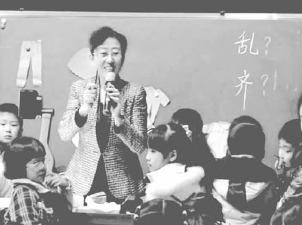
生：一会儿拿长裤一会儿拿短衣，就会乱，如果把长衣搭配什么和短衣搭配什么挨着弄出来，就不会乱了。
师：“挨着弄出来”是什么意思？
生：“挨着弄出来”的意思就是把长衣拿出来，再一个一个地搭配；然后再拿来短衣，一个一个地搭配。
师：这样搭配还容易弄乱吗？
生：不容易弄乱了。
（教师用黑板上的学具边演示边引导学生学习，然后把短衣拿出来）
师：短衣与谁搭配？
生：短衣与裙子搭配，再与长裤搭配，最后与短裤搭配。
师：这就是你们所说的“挨着搭配”。
（学生点头表示同意）
生：“挨着搭配”就是拿出短衣以后一个一个地与下装搭配。
师：短衣与下装都搭配完了，该做什么了？
生：把长衣与下装再一个一个地进行搭配。
（在黑板上放好长衣后，有的学生开始把三件下装挪到长衣下面）
师：（笑）又挪过来了？那短衣怎么办啊？有没有更好的方法？
生：可以用线连一连。
师：刚才谁汇报了3种搭配方案？你来连一连看。
（学生齐说：短衣配裙子，短衣配长裤，短衣配短裤。一学生连线。）师：短衣配完了，该做什么了？
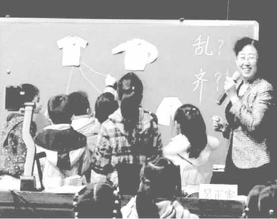
生：该配长衣了。
师：请一名刚才搭配出5种情况的同学来连一连（换了一种笔）。
（学生齐说：长衣配裙子，长衣配长裤，长衣配短裤。一学生连线）
师：所有情况都搭配齐了吗？
生：搭配齐了。
师：这就是刚才你们说的“一个一个挨着搭配”。这样搭配还乱不乱？
生：不乱了。
师：我们回过头来再看一看，开始汇报的第三种情况是不是就是这样搭配的？
生：是。他就是先拿出短衣配成3种，再拿出长衣配成3种的。
师：我们再看其他几个同学，一会儿用短衣，一会儿用长裤，一会儿用裙子，这样的搭配方法有什么缺点？
生：容易乱。
师：那么我们是怎样从乱到不乱的？
生：按照规律搭配就不乱了。
生：按照一定的顺序搭配就不乱了。
师：看来搭配的秘密让你们发现了，开始，老师在黑板上摆的是乱乱糟糟的，有些同学搭配起来也是没有规律的，现在我们让它们变得整齐了。从乱到不乱的过程，是按照一定的顺序，这个顺序也就是你们所说的“规律”。
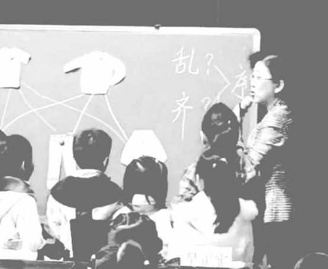
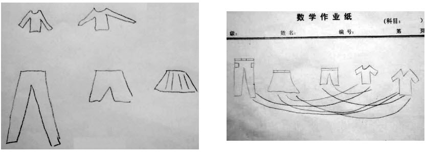
师：很多同学用文字叙述来表示不同的搭配情况，但也有同学的记录方法与他们不同。
（出示两种记录方法）
师：这两种方法怎么样？
生：把图画出来的方法挺清楚的，但是第一个同学没有连线，第二个同学线画得有点乱。
师：画图的方法确实挺好的，可是老师发现，有一个同学画图的方法与其他同学不一样。
（出示）
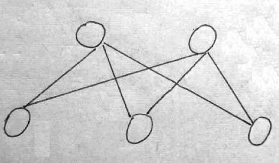
师：这种方法能不能表示搭配的不同情况？
生：他表示得不清楚，不知道哪个是上衣哪个是下装。
师：（请画图的同学）能说说每个圆代表什么吗？
生：上面的两个圆一个代表长衣，一个代表短衣；下面的三个圆分别代表裙子、长裤和短裤。
师：你自己知道，我们不明白。还有什么好的方法吗？
生：她可以把上衣和下装用不同的形状来表示。
师：怎样用不同的形状来表示？
生：可以把上衣用三角形、下装用圆形表示。
师：把它画出来好吗？
（学生画图后出示）
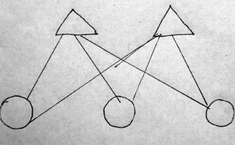
（有的学生发出“哇”的声音）
师：“哇”是什么意思？
生：我看出来这些图形不一样，就能很容易地区分出上衣和下装了。
师：你能说说它们都代表什么吗？
生：两个三角形代表上衣，三个圆代表下装。
师：这样画图有什么优点？
生：这样画图就能把上衣和下装分开，分开后就好搭配了。
师：用这种方法分开后，就容易表示搭配的不同情况了。除了用前面两种方法表示外，还有其他方法吗？
生：我是用数字加连线的方式表示的。我用1和2表示上衣，3、4、5表示下装。
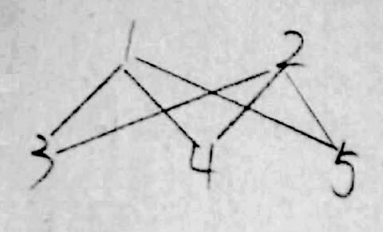
师：他的方法简便吗？
生：简便。
师：你们能给他提点儿意见吗？
生：你的1和2为什么不画连线？
生：1和2都是上衣，怎么能连线呢？
生：但是你并没有把它们区分开呀？
（用数字连线的学生在思考……）
师：能帮他修改一下，让它们便于区分吗？
生：可以用图形表示上衣。
生：也可以用字母表示上衣。
师：好极了，你来改一改。
（学生动手把数字改成字母）
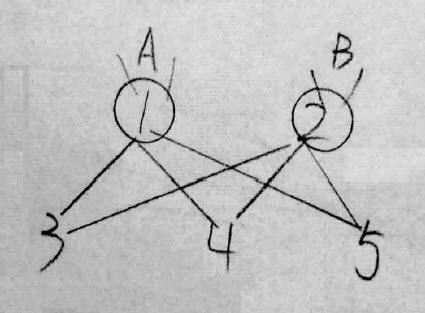
师：这种记录方式有什么好处？
生：用A、B表示上衣，用3、4、5表示下装，这样就能把不同的服装分类了。
师：分类有什么好处？
生：同类之间不能搭配，就不用连线了。
师：同学们用了这么多不同的展示方法，大家用什么样的方法都可以，但怎样才能做到不漏也不多呢？
生：要按照一定的顺序。
生：要按照规律挨着搭配。
师：刚才没有搭配全的同学，你们有什么想法？
生：我发现搭配方式是有规律的，不能乱搭配。按照一定的顺序就能排好。
生：只要按照规律搭配，就不会重复也不会漏掉了。
师：刚才，通过讨论，大家又有了新的思考。我们可以用动作来表示一下。
师：短衣与下装搭配的时候，一下子搭配了几种情况？大家和老师一起来，短衣——“刷”，几种情况？（语言与动作结合）
生：3种。
师：我把它记录下来。（板书：3）
师：短衣搭配完了，再来用长衣搭配。长衣——“刷”，又搭配出几种情况？
生：又多了3种。
师：我再把它记录下来。（板书：3）
师：有的同学好像又有了新发现。如果再来一件上衣，预备——齐——“刷”。
（学生与老师同时用手势和语言“刷”来表示3种搭配情况）
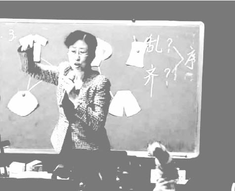
师：接下来我把这个同学的上衣借上来，预备——齐——
生：“刷”，又多了3种。
师：这回吴老师的上衣也上去了，预备——齐——
生：“刷”，又多了3种。
师：如果现在有9件上衣，能够搭配出多少种不同的情况？
生：27种。
师：你怎么这么快就得出结论？
生：因为“三九二十七”。
生：因为有9个3种。
师：没想到，9件上衣和3件下装搭配，你们都可以这么快算出结果。
师：我们再从下装与上衣搭配的角度来看一看。请你也用手势和声音表示出来。生：裙子和上衣——“刷”，2种。
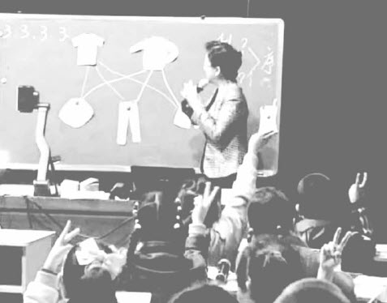
生：长裤和上衣——“刷”，又是2种。短裤和上衣——“刷”，又是2种。
（教师依次板书：2，2，2）
师：又来了一个短裤。
生：“刷”，又多了2种。
师：现在有10件下装，能和这2件上衣搭配出多少种不同的情况？
生：2乘以10等于20种。
师：看来，同学们在“刷，刷，刷”中又发现了规律。
师：每天我们上学前都要吃早点，如果把2件上衣分别改成“牛奶”和“豆浆”，3件下装分别变成“包子”、“面包”和“汉堡”，一种饮料与一种主食搭配算一种情况，有多少种不同的搭配方法？
生：6种。
师：你是怎么这么快得出结论的？
生：这道题虽然是吃的问题，但是与刚才穿衣服的问题道理是一样的。
师：很会思考问题。
师：吃过早点之后，我们应该做什么了？
生：上学去。
师：上学路上还会有关于搭配的问题。
师：张小东同学在上学的路上要路过一个图书馆，我们用字母A来表示小东同学的家，用字母B来表示学校。从家到图书馆有3条路，这3条路可以怎样表示？
生：可以用1、2、3来表示。（教师标注）
师：从图书馆到学校也有3条路，可以怎样表示？
生：可以用4、5、6表示。
生：用4、5、6表示不好，不容易与前面的路区分，应该用a、b、c表示。
师：（问回答“用4、5、6表示”的学生）你觉得呢？
生：我同意他的意见。（教师标注）
（教师在黑板上画出示意图）
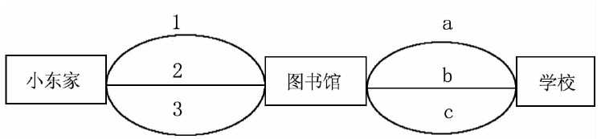
师：小东同学从家路过图书馆到学校，有多少种不同的走法？
（教师请一个对第一个问题只做了2种搭配的学生到黑板前，给其他同学进行讲解）
生：可以走的路线有1a、1b、1c——
师：一起帮他喘口气。
生：（齐）哎！
生：还有2a、2b、2c——
生：（齐）哎！
生：最后是3a、3b、3c。
生：（齐）哎！
师：一共几种？
生：9种。
师：你们有什么想法？
生：只要有顺序地找，就能找得不多也不少。
生：一个一个地挨着找，才不容易找错。
生：找的时候一定要有规律，才能够把所有情况找齐。
师：同学们，就要下课了，你们有收获吗？
生：我的收获是做什么事都要有规律，不能够没有顺序。
生：我学会了可以用一个简单的图代表一件事情。
师：今天学的穿衣服的事情，怎么吃饭、走路的问题，你们怎么解决呢？
生：就是把穿衣服的道理拿过来，用在吃饭、走路上。
生：我开始时做错了，后来和同学们一讨论，就学明白了。
生：我觉得学习原来能够这样有趣，我非常开心。
（本课整理者：李继东）